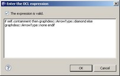
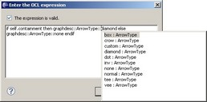
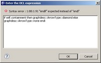
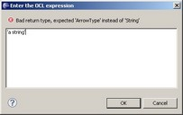

Emf2gv provides an OCL input dialog that provides a content assistant and validates the user entry on the fly (expression syntax and return type).
The OCL input dialog appears when one edits an OCL expression from the properties view and in the Filters page of the Run Configuration.
The OCL Input dialog :
The OCL Input dialog completion :
Expression syntax check :
Expression return type check (the expected return type depends on the context) :
